Префектура Исикава · Вадзима · ремёсла
Акито Акаги и мастера лака Вадзимы: как после землетрясения 2024 года спасали ремесло
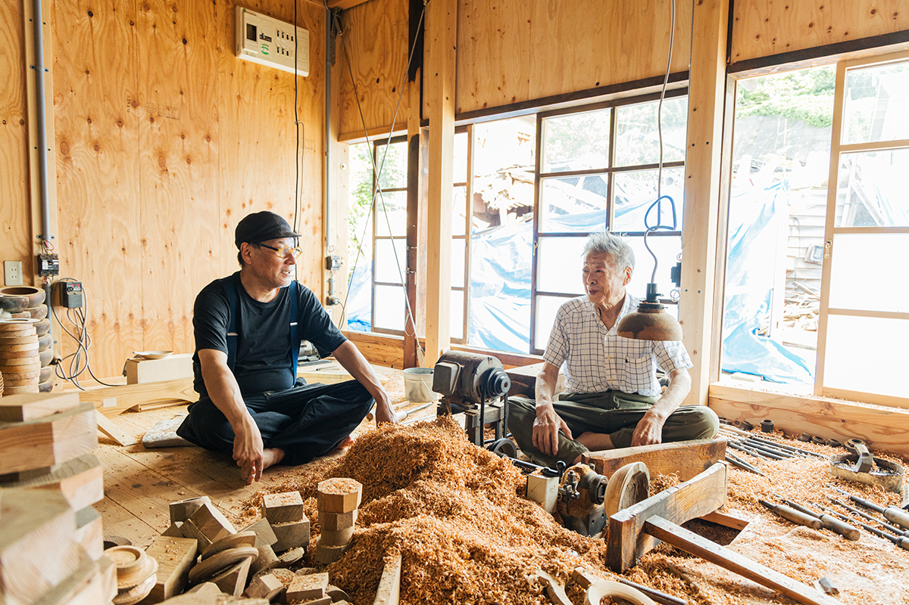
Вадзима на полуострове Ното издавна славится лаковой посудой. Землетрясение 1 января 2024 года разрушило здесь многие мастерские, но мастера лака сделали первые шаги к тому, чтобы ремесло продолжилось.
Ремесло
Самый прочный лак Японии
Вадзима, город на севере полуострова Ното, один из самых известных в Японии центров лаковой посуды. Влажный климат побережья Японского моря и леса, где растёт нужное дерево, помогли ремеслу укорениться здесь очень давно.
Лак Вадзима-нури отличается прочностью. В нижние слои лака здесь подмешивают «дзи-но-ко», местную диатомовую землю, а слабые места деревянной основы укрепляют тканью, которую вклеивают под лак. Такую посуду ценили по всей Японии, и спрос на неё рос.
Со временем сложилось разделение труда: 124 этапа, от замысла и деревянной основы до покрытия лаком и украшения, выполняют разные мастера, каждый в своём деле. Изделия, в которых соединяется работа многих рук, становились всё лучше, и Вадзима вышла на первое место в Японии по производству лаковой посуды.
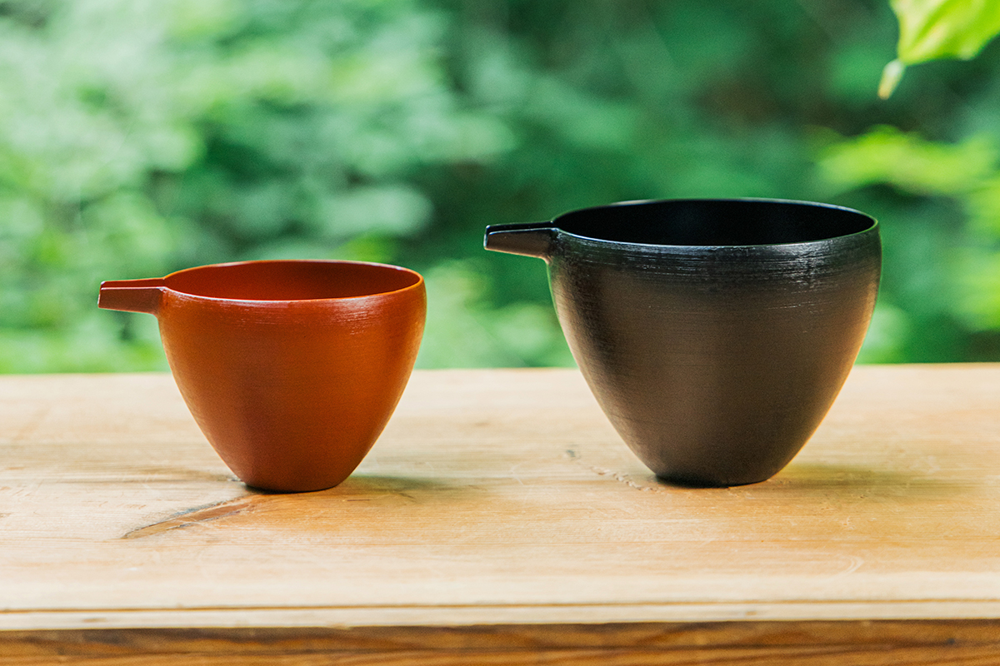
1 января 2024 года полуостров Ното пережил сильнейшее землетрясение, толчки достигали высшей, седьмой ступени японской шкалы. В Вадзиме рухнули многие мастерские и дома мастеров, а мастерские у улицы утреннего рынка, где их было больше всего, сгорели. Первые шаги к восстановлению сделали мастера лака, которые и до этого приносили в Вадзима-нури новое.
Нуси
Акито Акаги и форма чаши
Акито Акаги работает в традиции Вадзима-нури, но всю жизнь ищет форму, в которую верит сам. Почему его посуда так красива, лучше всех объяснил 86-летний мастер деревянных чаш, с которым он работал.
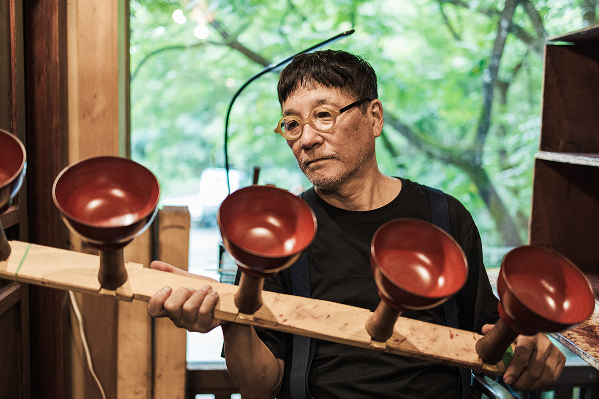
«Этот хозяин строгий. В форме он уступок не делает. Этим он и отличается от других хозяев: всегда ищет форму лучше той, что есть»
мастер деревянных чаш
Старый мастер вырос в семье, где деревянные основы для лака делали из поколения в поколение. По словам Акаги, в нём живут красивые формы Вадзима-нури, которые существуют с давних времён. Ценность ремесла не только в материалах и передаче техники: старые формы хранятся в самих мастерах. Если вывести наружу то, что знает опытный мастер, и работать вместе, получается вещь, которая сильнее одного человека.
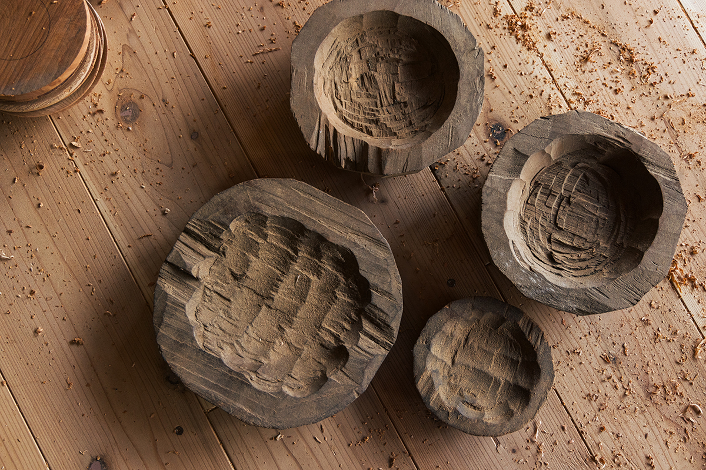
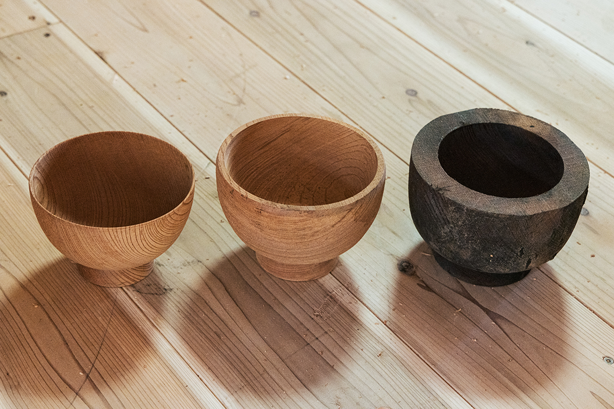
Мастеров деревянной основы, кидзиси, в Вадзиме несколько видов: одни точат чаши, другие гнут тонкие дощечки, третьи собирают ящики и столики, четвёртые вырезают вещи из магнолии хоо. Слово «нуси» означает не просто мастера, который кладёт лак. В Вадзиме так называют того, кто берёт на себя верхнее, последнее покрытие и при этом ведёт всю работу над вещью до конца. Акаги руководит именно такой мастерской: он придирчиво оценивает то, что делают кидзиси, и всё время дорабатывает форму.
«Форма чаши это одна линия, симметричная слева и справа. Сдвинешь её на толщину листа бумаги, и форма уже другая. Если не искать всё время самую красивую точку, форма будет понемногу угасать»
Акито Акаги
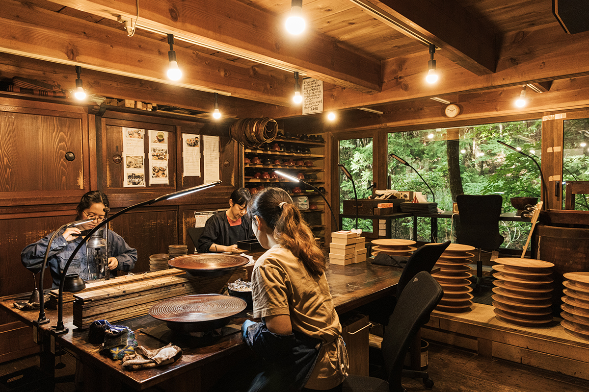
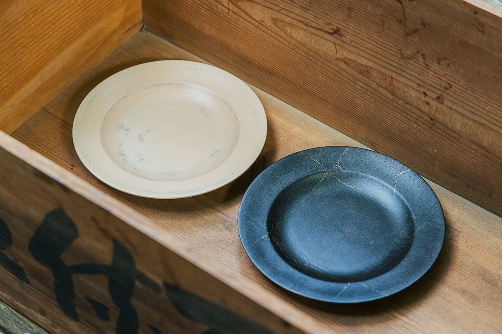
Восстановление
Мастерская, которую подняли первой
Во время землетрясения мастерская старого мастера чаш рухнула. Он сел перед развалинами и два дня не двигался, а на третий потерял сознание, и его увезла скорая. Акаги решил, что не может так его отпустить, и мастерскую нужно поднять заново. Он начал «Проект возрождения маленьких мастерских деревянной основы» и попросил о помощи всех, кто может её дать.
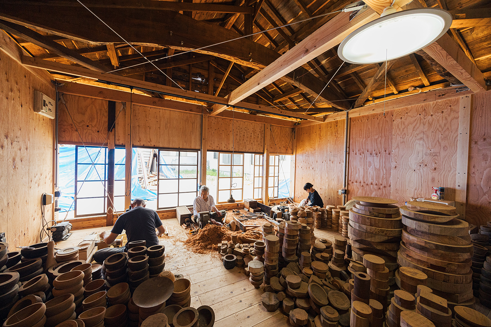
В Вадзиме землетрясение тяжело ударило по мастерским и домам людей, которые десятилетиями тихо делали своё дело, и большинство из них пожилые. Если ничего не делать, многие закроются ещё до того, как придёт помощь от города и государства, и то, что веками передавалось на этой земле, исчезнет. Поэтому Акаги начал с мастерской самого старого мастера в Вадзиме и восстановил её раньше всех в городе.
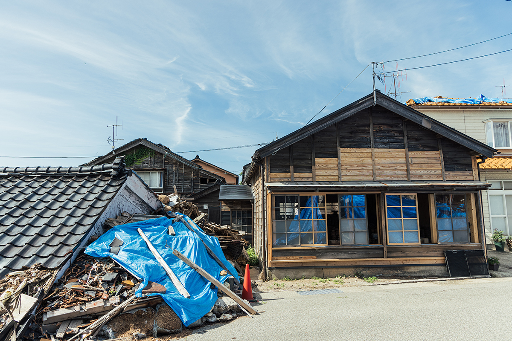
В начале апреля 2024 года старый мастер вернулся в свою мастерскую. По обе стороны от него сели двое мастеров из мастерской Акаги и начали учиться ремеслу кидзиси. В конце июня он ещё показывал свою безупречную технику, а в начале июля 2024 года его не стало. Двое его учеников продолжают учиться, в том числе у других мастеров деревянной основы, и готовы стать кидзиси Вадзимы.
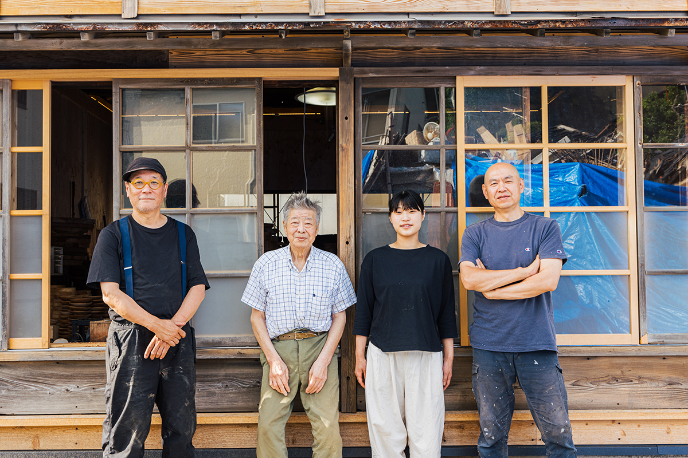
Новое поколение
Другие мастера Вадзимы
Восстанавливать ремесло взялись и другие мастерские Вадзимы. Мастерская Wajima Kirimoto вернула к жизни деревянные основы, которые нашлись после землетрясения: недоделанные и давно отложенные вещи получили современный вид. Мастерская Taya Shikkiten делает простые вещи для знакомства с Вадзима-нури, например кухонные лопатки, и открыла заведение, где едят из такой посуды. О них мы рассказываем в отдельных статьях.
В гостях
Дом среди деревьев
Дом и мастерская Акаги стоят в глубине деревни, чуть в стороне от центра Вадзимы. Дом сливается с окружающей природой, и сюда приезжает много гостей.
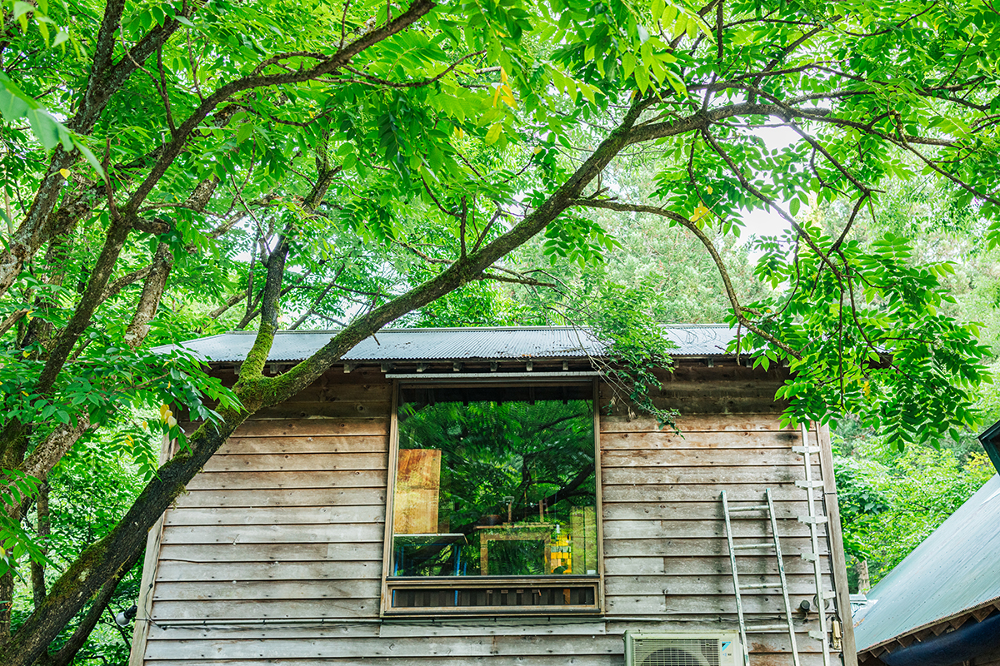
Мастерская лака Акито Акаги
- Адрес
- префектура Исикава, Вадзима
- Сайт
- nurimono.net
Фото: Майко Фукуи.